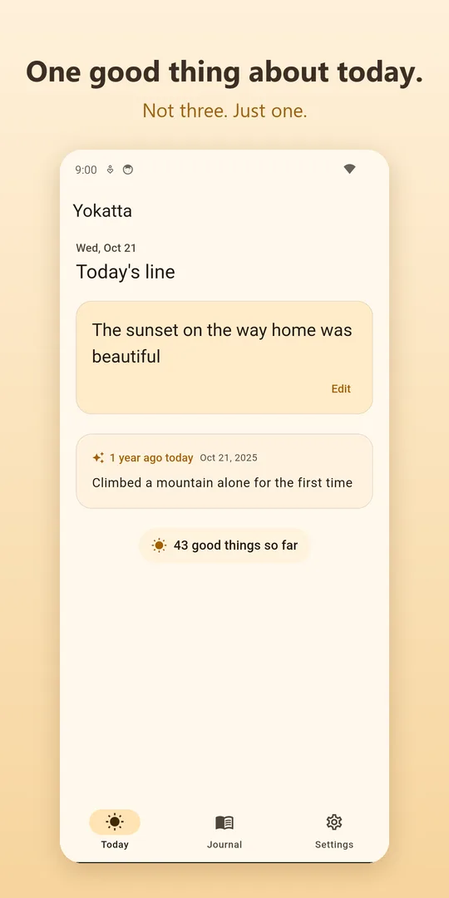
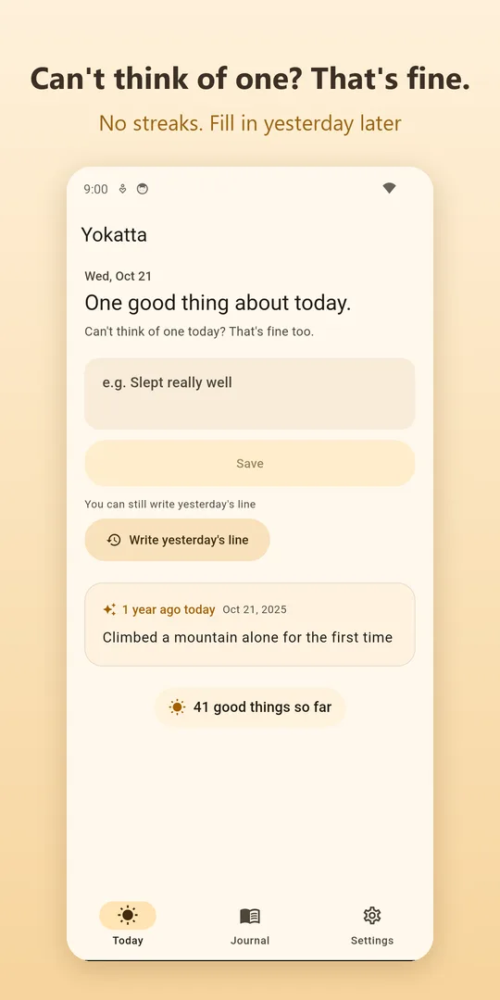
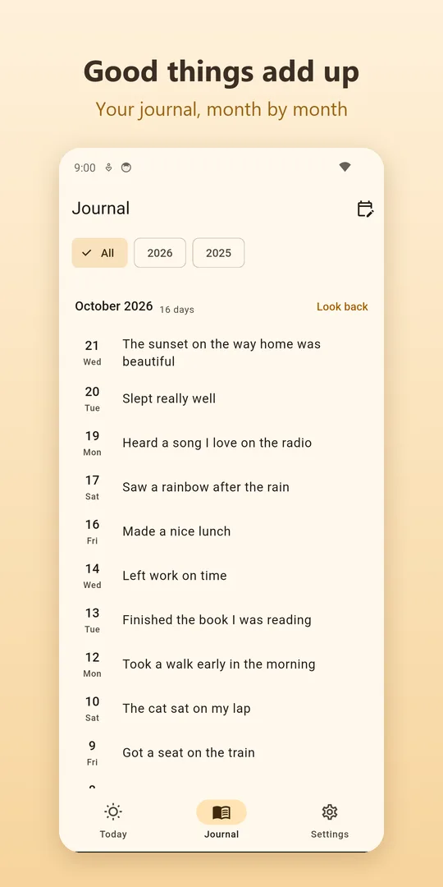
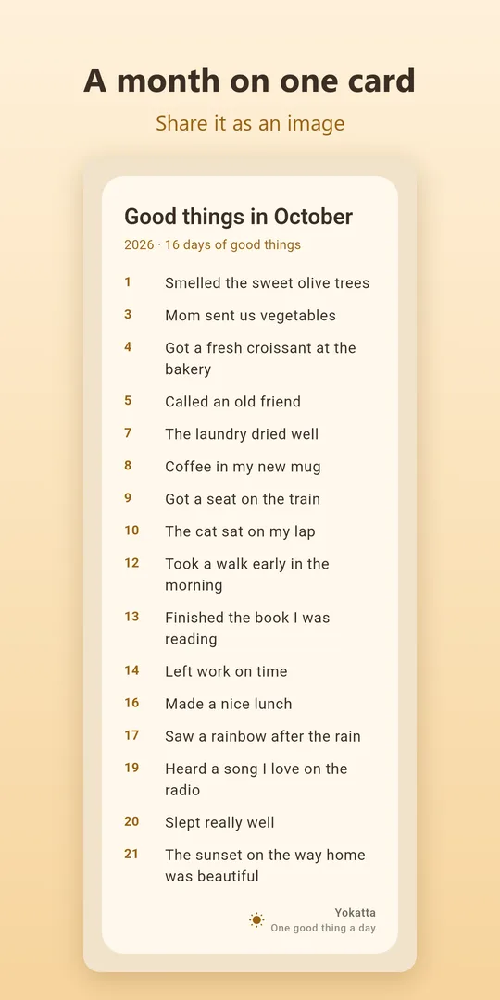
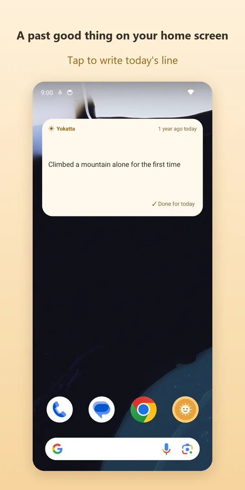

One good thing
about today.
Yokatta is a tiny journal for one good thing a day, in one line. No long entries, no lists. "The sunset on the way home was beautiful." That's today's journal, done.
Get it free on Google PlayAndroid · Everything free (small banner ad) · No account

One line a day, up to 100 characters. Stop trying to write properly, and it lasts.
There are no streaks. Miss a day and nothing is lost. You can fill in yesterday later.
"One year ago today", "one month ago today", and a past line on your home screen widget every day.
The evening reminder never fires on days you've written, and you can reply to it with your line.
Screens




Your journal stays on your phone
No account. Your lines are stored only on this device and never sent anywhere. Save a backup when you switch phones.
FAQ
Is it free?
Everything is free. There are no in-app purchases. A small banner ad is shown at the bottom (not on your first day).
What if I skip many days?
Nothing happens. No streaks, no count of missed days. Write one line whenever you feel like it.
Is there an iPhone version?
An iPhone version is on the way. We'll announce it here.